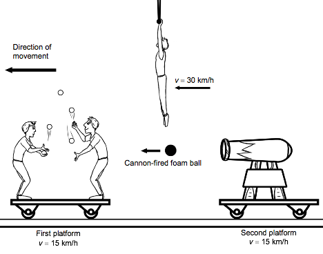

5. Paul, a stationary observer, is sitting in
the audience at a circus show. He sees two rolling platforms moving along the
same track. Both platforms are travelling at a constant speed of 15 km/h
in the same direction.
The first platform has two
jugglers. The second platform, travelling behind the first, carries a cannon which shoots foam balls at the jugglers. The cannon launches the balls at a
speed of 15 km/h relative to the platform.
At the same time, an acrobat
moves horizontally on a cable at 30 km/h in the same direction as the
platforms.
The diagram below
illustrates the circus show as seen by Paul.
Circus Show as Seen by
Paul

Which of the following correctly
states what Paul sees?
A) Paul sees the acrobat moving as fast as the
cannon-fired foam balls.
B) Paul sees the jugglers moving as fast as
the cannon-fired foam balls.
C) Paul sees the acrobat moving twice as fast
as the cannon-fired foam balls.
D) Paul sees the jugglers moving twice as fast
as the cannon-fired foam balls.